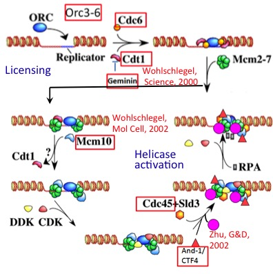
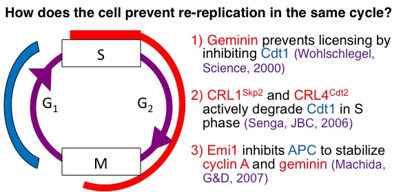

DNA Damage
My lab identified many human replication initiator proteins and their genes (Orc3-6, Cdc6, Cdt1, geminin, Cdc45, Mcm10 and And1/Ctf4: red rectangles in the figure on the left). Using these reagents, we showed that cellular replication initiation factors are used to support replication of EBV during the latent phase of infection. Tethering some of these replication initiation factors to synthetic extrachromosomal circles of DNA allows them to replicate during the normal cell-cycle. We recently discovered that the latest "replication initiation factors", MCM8 and MCM9 are not involved in replication initiation, but are involved in single-stranded DNA resection at sites of double-strand breaks. Mutation in MCM8 and MCM9 genes are seen in 5-10% of human cancers and I am determining whether such mutations are biomarkers for responsiveness of a cancer to drugs like cisplatin and olaparib.

It is conceptually obvious that mammalian chromosomal replication origins should fire only once during a single cell cycle, yet the mechanism underlying this regulation was not known. We discovered that the interaction of human geminin with the replication initiation factor Cdt1 is critical to prevent chromosomal origins of replication from firing more than once in the same cell-cycle. We discovered additional parallel mechanisms that prevent re-replication (see figure) and that re-replication causes DNA damage and could be the mode of action of a new experimental anti-cancer drug, MLN4924.
